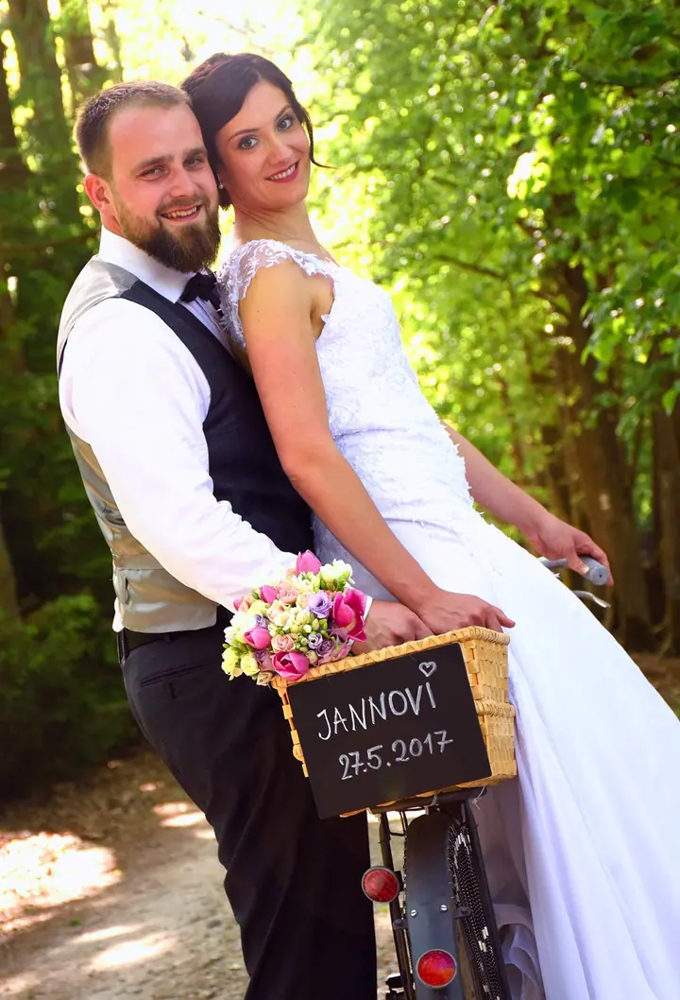
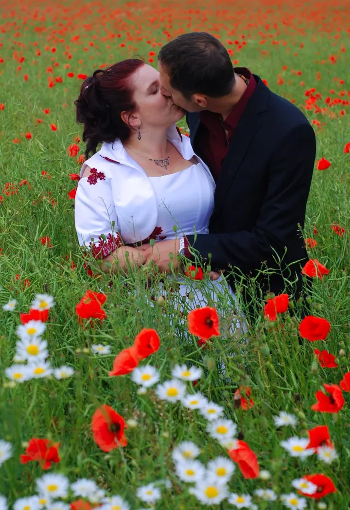
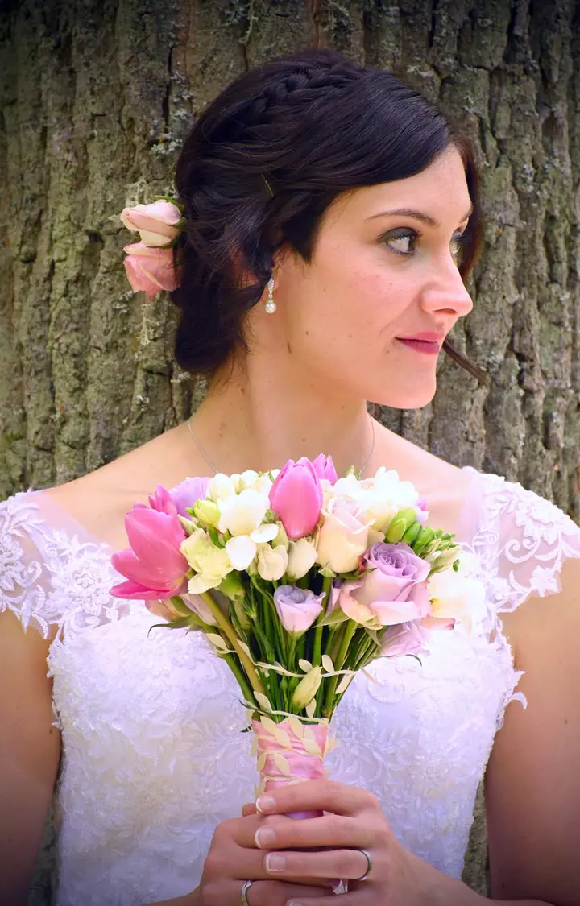
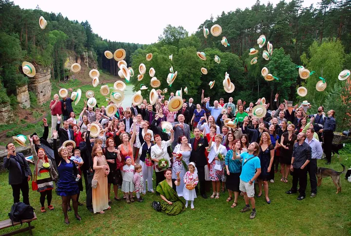

jedna
Svatby
Svatby v lesním hotelu, na hradě i na louce skoro na konci světa. Za mě je květen skvělý měsíc na svatbu, hlavně v přírodě, ale fotím v jakémkoli počasí.

Svatební fotograf a grafik · Třeboň, Novohradské hory, Krkonoše

Jmenuji se Pavel Pfauser a fotím z Třeboně, i když vaši událost nafotím rád kdekoli. S fotoaparátem jsem 18 let a pořád mě to baví. Nejvíc mě těší svatby v přírodě, ať je to lesní hotel, hrad, nebo rozkvetlá louka.
Více o mně
Co fotím
jedna
Svatby v lesním hotelu, na hradě i na louce skoro na konci světa. Za mě je květen skvělý měsíc na svatbu, hlavně v přírodě, ale fotím v jakémkoli počasí.
dvě
Společné focení venku, třeba na vrcholu hor nebo na rozkvetlé louce. Hory dokážou vykouzlit úsměv na tváři každému.
Těhotenské fotky i focení rodin s malými dětmi. Udržet pohromadě tři malé děti je výzva, ale o zábavu je vždycky postaráno.
Kromě fotografií pro vás připravím i grafiku podle vašich představ. Podle zkušeností z předchozích zakázek vám umím dát orientační cenu předem.
Když v den svatby prší, novomanželům padá štěstí.

Za objektivem
Letos je to 18 let, co jsem si koupil první zrcadlovku. Jednou si dám tu práci a aspoň přibližně spočítám, kolikrát jsem už zmáčkl spoušť. Technika se za tu dobu proměnila, můj pohled na fotografii ale zůstal stejný.
Fotím hlavně svatby, ale také páry, těhotenské fotky a rodiny. Byl jsem u tajné svatby, u svatby v batikovaném oblečení i u hradní svatby na Kosti. Každá je jiná a každý pár se má brát přesně tak, jak to cítí.
Pod značkou Studio 23 se věnuji i grafice. Když potřebujete fotografa, grafika nebo obojí, jste u mě správně. Stačí mi napsat a brzy se vám ozvu.
Pavel
Pošlete mi pár řádků o tom, co chystáte, kdy a kde. Ozvu se vám, jakmile to bude možné.
Cenu stanovuji individuálně podle charakteru akce, doby trvání a požadavků na zpracování. Vždy ji spolu odsouhlasíme předem.
Přijedu za vámi do Třeboně i kamkoli jinam. Hlídám příběh celého dne, od přípravy po hosty, kteří vyhazují klobouky.
Fotografie pečlivě vyberu a zpracuji. Pak už jsou vaše a připomínají vám ten den navždy.
Portfolio
Otázky
Cenu stanovuji individuálně. Hodně záleží na charakteru akce, době trvání a požadavcích na zpracování. Nebojte se mi ozvat, určitě se domluvíme.
Ano. Jsem z Třeboně, ale vaši událost nafotím rád kdekoli. Fotil jsem třeba v Novohradských horách, v Krkonoších nebo na hradě Kost.
Říká se, že když v den svatby prší, novomanželům padá štěstí. Fotím za každého počasí a krásné fotky vzniknou i pod deštníkem.
Kromě fotografie se věnuji i grafice. Cena se odvíjí od náročnosti a rozsahu zakázky, orientační částku vám ale umím říct předem.
Napište pár vět o tom, co si představujete. · +420 608 215 767